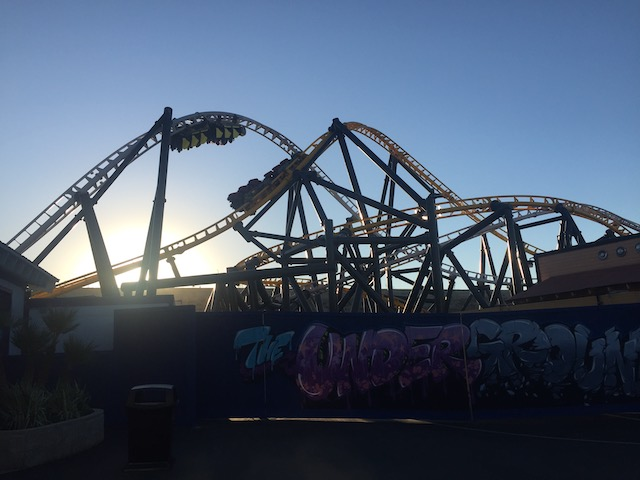

| |
West Coast Racers Review

We're here at Six Flags Magic Mountain. Today's ride we'll be reviewing for you is West Coast Racers. The parks newest roller coaster, and yet ANOTHER Premier Launched Coaster. Yeah. They already have Full Throttle, now West Coast Racers is here too! But don't worry. Both are fun rides, and they're different enough from each other to be their own unique rides. With that said, we hop in the cars, pull down the lap bar, do the comfort collar *groan*, and we're off! We roll out to the launch. Look to your right, and we see the bastards on the Yellow Track. We want to get into a big coaster duel, but then we think...."Nah. That'd be mean. I mean....what if that was us!? What if we were the poor bastards on the yellow track?". So we stay civil and be polite to the other side. Our engines rev up, and we launch! It's not an intense launch or anything crazy, but it is still fun. We then head into the High Five. You know, it's funny. This element use to be so elusive. An element that seemed so novel. Only one in the world. On that woodie in China. Then the second one got built on Twisted Collosus. And now finally, we have the third one on West Coast Racers. This suddenly doesn't feel so unique and noteworthy. But regardless, it still is a very fun element. Both because we get a nice pop of sideways airtime (one of the best parts of the ride), but it genuinely does look like we can high five the yellow side. HIGH FIVE!!! Moving on, we then head into....this inversion. It's kind of like a corkscrew, only a big more like a Zero G Roll. I know it's called a Zero G Stall, but this inversion is nothing like that. Maybe it's that on a much smaller scale....doesn't matter. It's a lot of fun, and has a little bit of whip to it. We go over a small hill, and go into Launch #2! I was hoping for something like on Speed: the Ride, but this is much tamer. This....kind of feels like a reverse trim. Like it's giving us a kick of speed, but it doesn't really feel like a launch. But hey! I'll always take more speed. =) We then rise up and go through a big corkscrew. Fun, but if we look, the yellow track is also going through a corkscrew. WAVE TO THEM!!! We go around a big banked turn, with the yellow track right on our tail. Small hill, and into a downward helix. We go through a small airtime hill, but sadly, no airtime. We go through a turn. Look up, the yellow track is going through a corkscrew. Go through another curve, get a little laterals, and we glide into the brake run. Or as I like to call it, "We'll be right back after these messages". Yeah. This ride has a freaking commercial break. You see, it's sponsered by West Coast Customs, a company most known for "PIMP MY RIDE!!!", and you see their stuff in this part of the ride. I may not care, but this ride wouldn't exist without them, so I'll take the ad. Also, this ad is timed so that it releases when the other train is ready. So this ride ALWAYS duels. And I love that. The only other coaster I knew that did that to always ensure it dueled was Dueling Dragons, back before Universal neutered the ride and eventually murdered it (F*CK YOU UNIVERSAL!!!). We then roll back out onto the launch track. Wait. We were just here. OH SH*T!!! WE'RE THE PEOPLE ON THE YELLOW TRACK NOW!!! Let's hope the folks on the White track have the same compassion we showed the folks on the last train. We go through the launch again. It's just like the first launch. Not crazy, but fun. We then go through the other side of the High Five. Again, I love this element. We then go through a small hill. No airtime. But look up. The white track is going through that inversion right above us. That's cool. Go through a curve, down a small drop, and into the 4th launch. Again, doesn't feel like a launch, but I'll always take the speed. We rise up and go into a corkscrew. Then we go into a curve, chasing after the white track. You know, the best part of West Coast Racers is easily the racing element. If it was just one side by itself, not racing, it'd be fun. But nothing special. However, the dueling and racing and two tracks just makes this SO MUCH BETTER! Go through a downward helix, that's fun. And sweet! We go through one final corkscrew. Not a ton of whip or anything, but it's still fun. Wave hello to the White Track down below. We go around a curve, and into the brake run. Yeah. This ride is not exactly intense, but it is just a ton of fun. I know the capacity is not the best, but it's still just a really fun ride that's worth a couple rounds.
7/10
Location: Six Flags Magic Mountain
Opened: 2020
Built by: Premier
Last Ridden: April 5, 2023
West Coast Racers Photos



Home
|